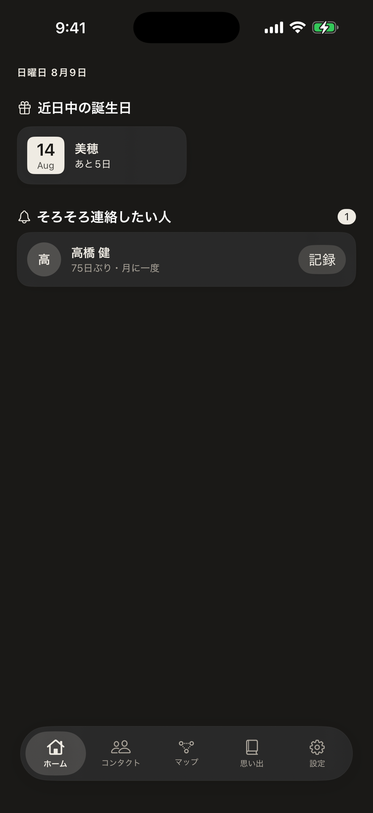
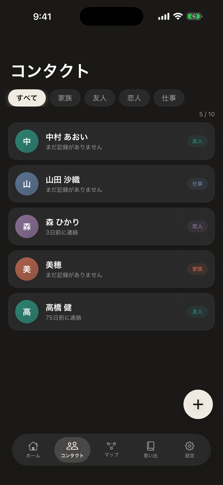
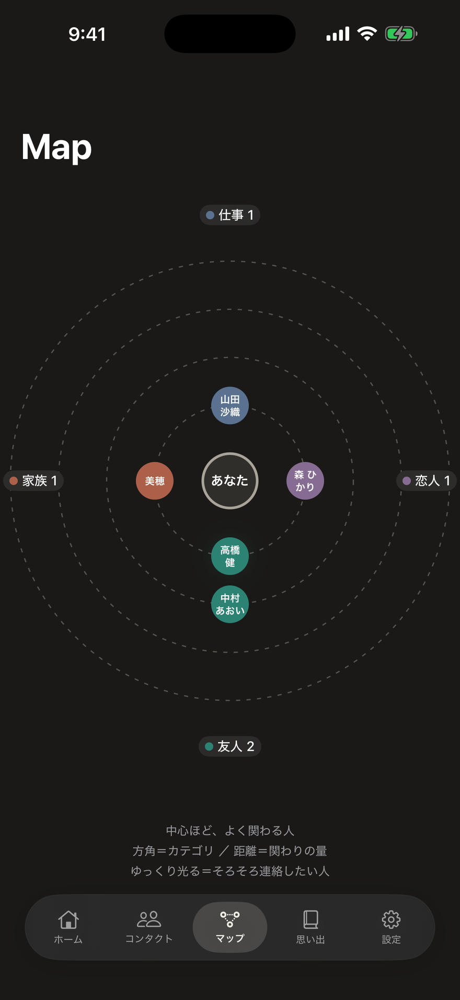
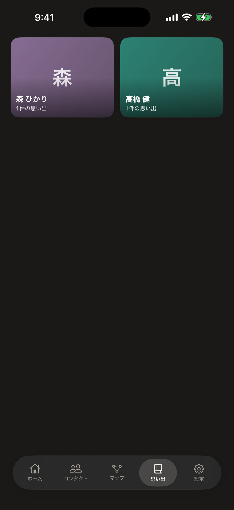

このアプリの魅力を詳しく
Keep In Touch を、画面で知る。
大切な人との連絡を、無理なく思い出すために。Keep In Touch の主な画面が、「ゆるやかにつながりを保つ」ために何をしてくれるのか——ひとつずつ紹介します。

ホーム
そろそろの人が、そっと浮かぶ。
開くと「そろそろ連絡したい人」が静かに並びます。ご無沙汰になりかけた人を、急かさず・責めず、頃合いで思い出せるように。
気になった人には、その場で「記録」をワンタップ。会えた日を、すぐ残せます。

コンタクト
大切な人が、ここに集まる。
家族・友人・恋人・仕事。連絡を絶やしたくない人を登録し、カテゴリで色分け。最後に連絡した日も添えて、顔ぶれを静かに見渡せます。
誰を大切にしたいか——その輪を、自分の手で整えられます。

関係マップ
つながりが、地図になる。
あなたを中心に、関わりの深さを「距離」で配置。よく関わる人ほど中心に、ご無沙汰の人は外側へ。関係の全体像が、ひと目で見えてきます。
そろそろの人は、ほのかに光ってサインを送ります。光ったら、連絡の頃合い。

思い出
会話のかけらを、ためていく。
人ごとに、最後に話した日やちょっとしたメモを残せます。たまった「思い出」が、次に話すきっかけに。
重ねるほど、その人と過ごした時間が、静かに形になっていきます。
プライバシー
つながりは、あなたのもの。
大切な人の連絡先は、原則あなたの端末の中だけに保存されます。行動を追跡する仕組みも、広告もありません。詳しくは Keep In Touch のページ をご覧ください。